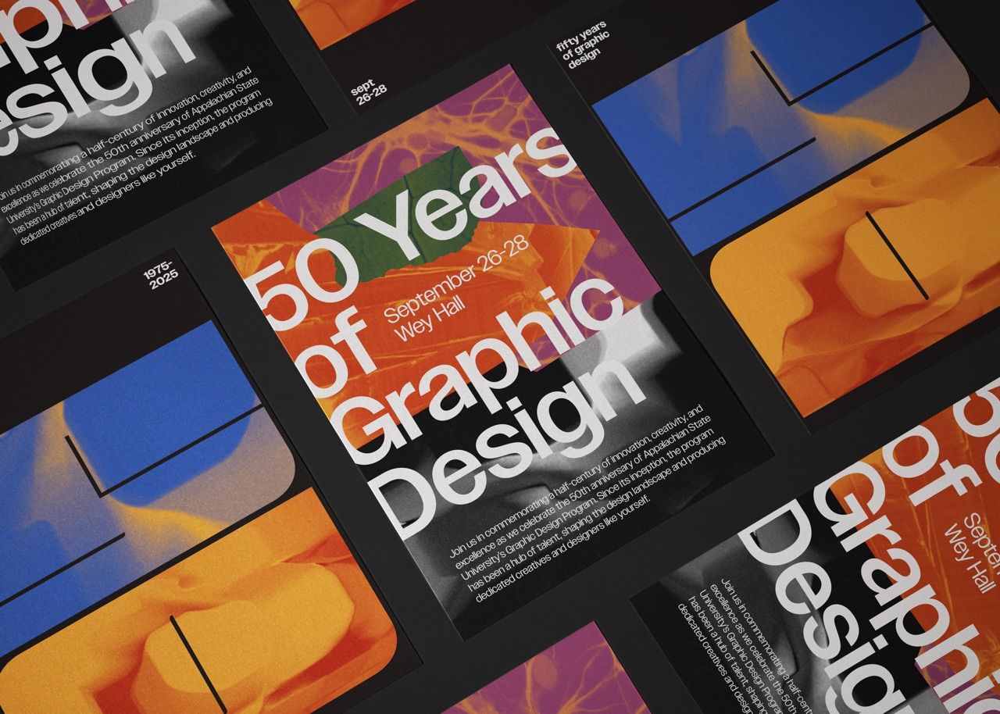
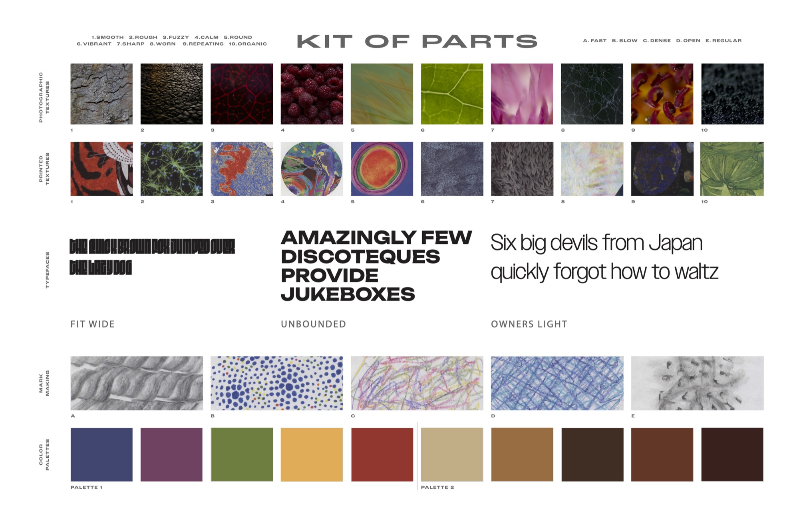
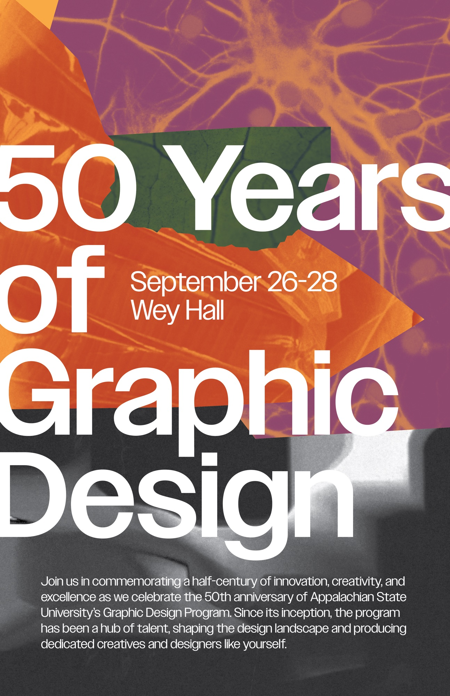
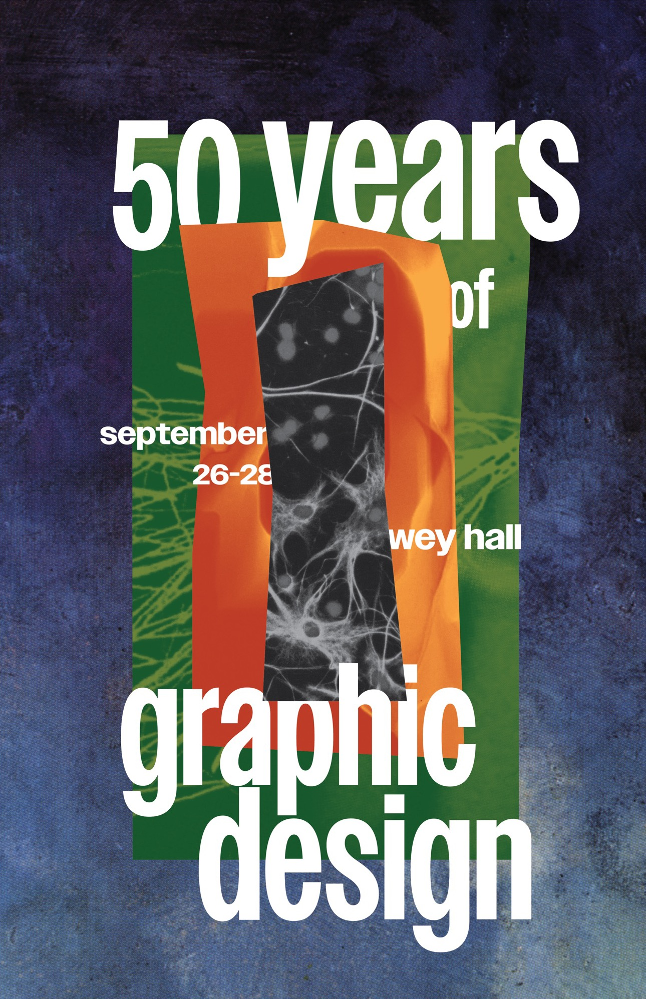
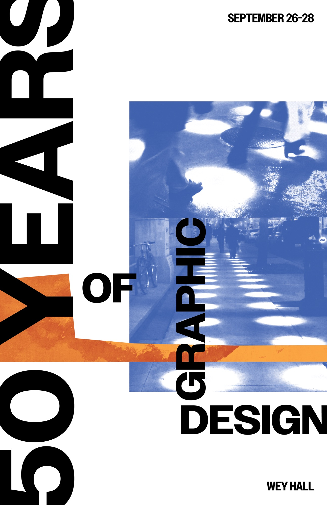
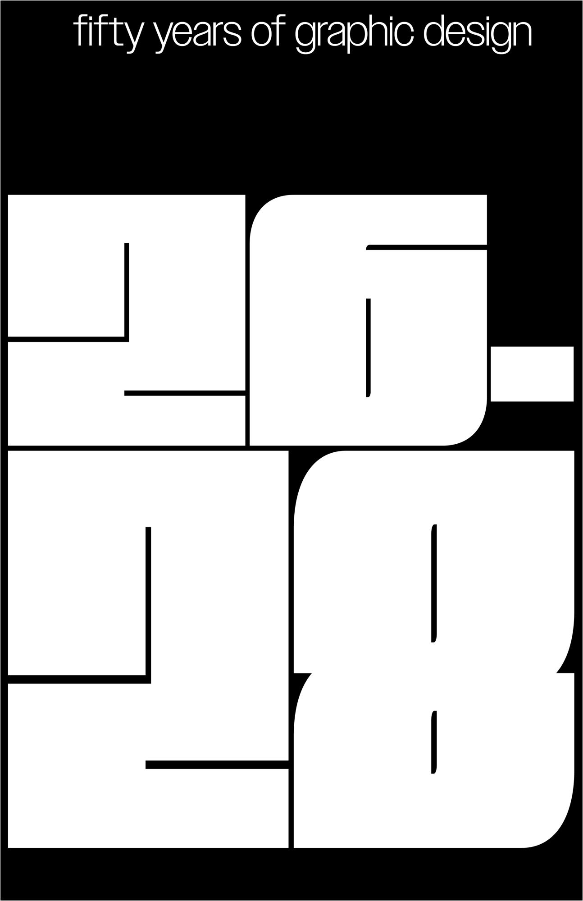
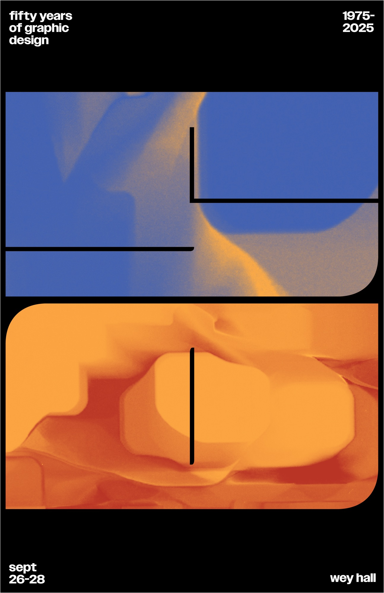
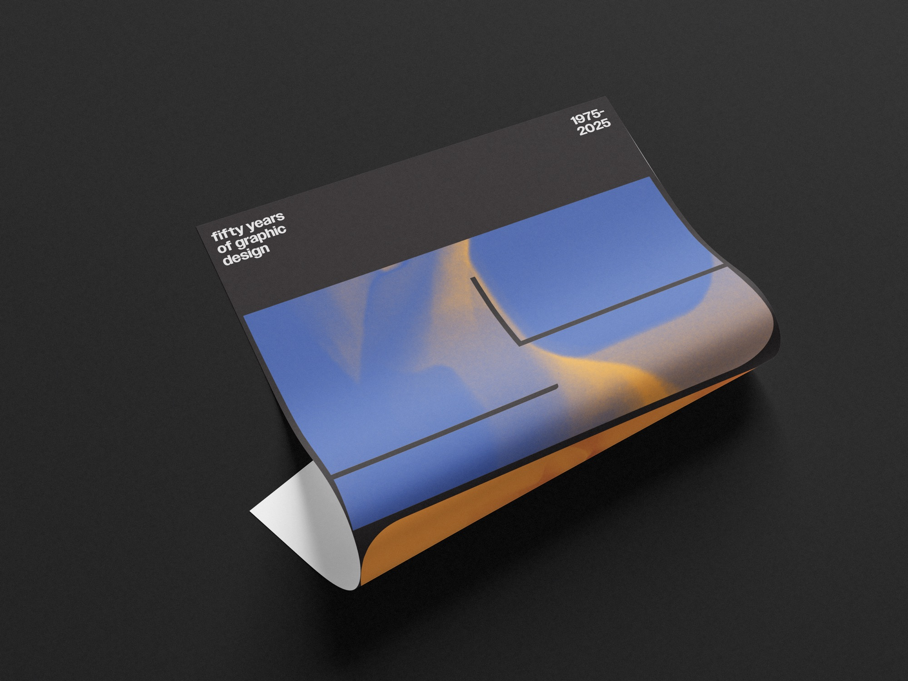
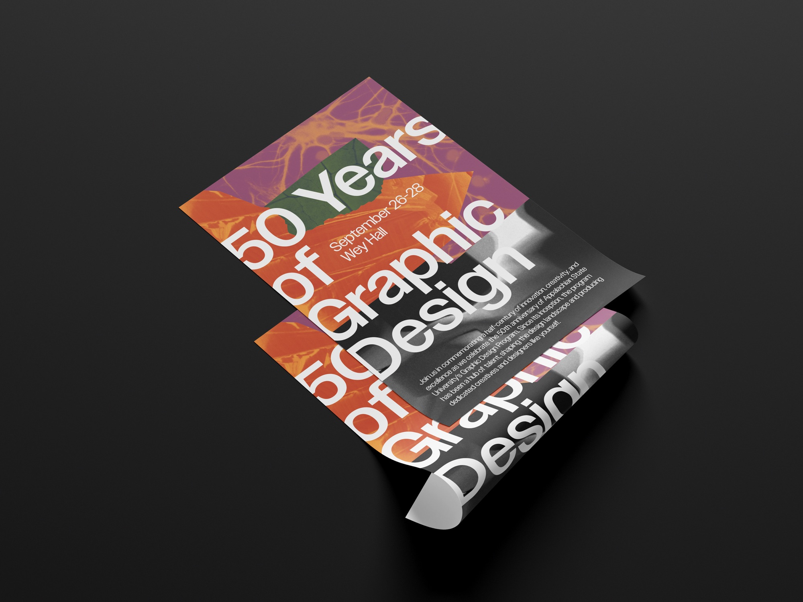

50 Years of Graphic Design
A poster series promoting the Graphic Design program’s 50th Anniversary event, built entirely from a “kit of parts” I collected around Boone.
Kit of Parts
This project began with building a personal “kit of parts” made entirely from materials gathered around Boone. I spent time walking through campus, downtown, and the library collecting textures, typography, and color inspiration from everyday environments. The goal was to create a small visual library made up of photographs of outdoor textures, scans from printed materials, hand-made marks, found typography, and color palettes extracted from real objects. By assembling these pieces into a single system, the project set the foundation for exploring how constraints and collected materials shaped my design process.
From Collage to Poster
After organizing the kit, I used those materials to create a series of physical collages that combined the textures, colors, and marks into layered compositions. These collages served as the starting point for a set of posters promoting the Graphic Design program’s 50th Anniversary event. Each poster was built using only the elements from my kit—its textures, typefaces, and color palettes—forcing me to experiment with composition, scale, and hierarchy within a limited set of tools. Starting from the scanned collages helped generate unexpected layouts and visual relationships, which I then refined digitally into a set of distinct poster directions.
Reflection
Working within a self-constructed kit of parts pushed me to think more intentionally about how design systems are built from small visual ingredients. The project emphasized experimentation and iteration, encouraging me to explore many different compositions rather than settling on a single solution. It also reinforced how constraints can actually open up creative possibilities, especially when the materials are drawn from the surrounding environment. By the end of the sprint, the posters not only promoted the anniversary event but also reflected the textures, typography, and visual character of the place where the work was created.